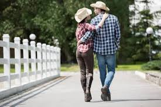

vestuario
Como bien hemos adelantado, la moda de los años 90 deja atrás los colores fluorescentes y demasiado llamativos. Aunque sí es cierto que las tonalidades se suelen combinar, pero se hace de una manera más relajada. Del mismo modo, otro de los aspectos básicos fue la simplicidad de los looks, entre los que podemos hablar de un toque minimalista. La comodidad era la base de esta época llena de grandes tendencias que todavía permanecen en nuestro presente. Aparecen las llamadas supermodelos, quienes nos acercan a una línea de ropa mucho más versátil.
Como cada temporada y cada década, el estilo vaquero también estaba presente. Pantalones de tiro alto que se combinaban con camisas y cazadoras, también dénim. Eso sí, todo ello bastante flojo, ya que como venimos diciendo, la comodidad se imponía ante todo ello. Además, los pantalones comenzaron a verse desgastados y con rotos, gracias a la tendencia grunge. No nos podemos olvidar de las cazadoras con bordados o parches. Sin duda, de los grandes clásicos que hoy en día podemos encontrarnos en las grandes firmas.

Las camisas de cuadros eran las protagonistas fundamentales para poder completar un look como hemos mencionado. Aunque se podían ver también con camisetas básicas en color blanco. Parece que las influencias del rap también se colaban en nuestras prendas de moda.
Hoy la tenemos en tejidos de lo más variados y también, con bordados o colores dispares. Pues bien, en la moda de los años 90 no podía faltar la cazadora bómber. Otra de las claves más solicitadas junto con la cazadora vaquera. Pero en aquellos años solíamos verla en tonos lisos, sin tantos adornos.
Como ya hemos mencionado, en las prendas vaqueras, los pantalones se caracterizaban por ser de lo más sencillos. Al mismo tiempo, el tiro alto era el elegido y no solo en los vaqueros, sino también en los pantalones de tela. Eso sí, si seguimos hablando de la tela vaquera, el peto era otra de las prendas clave para nuestro día a día.

Por un lado, teníamos a los vestidos ajustados y con ligero estampado floral. Pero por otro, también hay que destacar los de corte minimal, con aire lencero y muy sencillos con tirantes. Dos maneras perfectas de poder combinarse en diferentes momentos de nuestro día y noche.
Las blusas blancas, atadas a la altura del ombligo no podían pasar desapercibidas. Otra de las grandes ideas de estos años. Con tan solo un lazo o un nudo, ya le dábamos un nuevo aire a esta prenda. Aunque si no querías ponerte a trazar dicho nudo, nada como un top corto. ¡Si es que parece que realmente no hemos viajado en el tiempo, porque todas tenemos estas prendas en el armario!.